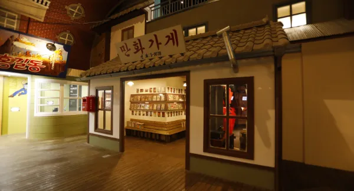
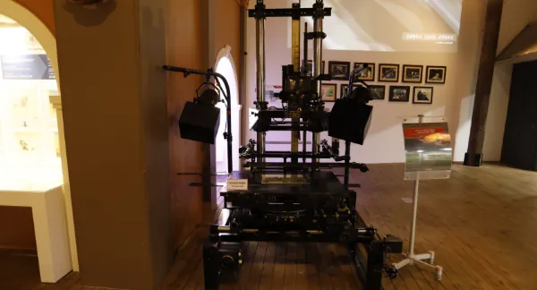
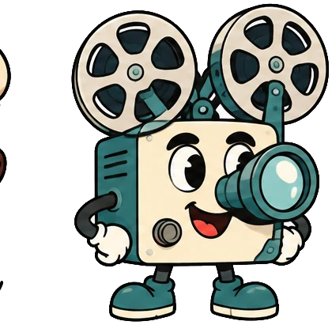
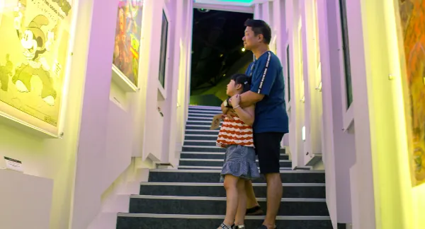
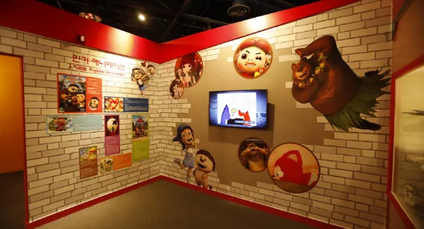
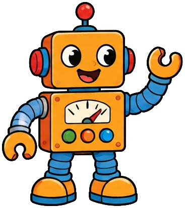
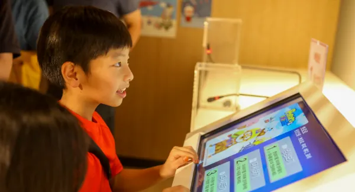

상상의 계단도장 여행
1층 동굴벽화에서 2층 기획전시실까지,
관람 순서대로 아홉 칸에 도장을 찍어 보세요.

 1층
1층 영사기
영사기 상상의
상상의 세계관
세계관 체험
체험01
동굴벽화
애니메이션박물관 1층
애니메이션은 무슨 뜻일까요? 기원전 1만년 경 알타미라 동굴에서 그 뜻과 원리를 알아보세요.

02
1층 전시관
애니메이션박물관 1층
애니메이션의 탄생과 발전과정을 영상과 다양한 전시물로 살펴보세요. 애니메이션의 종류와 한국 애니 역사를 다양한 자료로 알아볼 수 있습니다.

03
영사기
애니메이션박물관 1층
영사기는 어떻게 시작되었을까요? 환등기에서 시작된 영사기의 발달과정과 1890년대 사용된 유리필름을 만나보세요.


04
상상의 계단
1층에서 2층으로
다양한 애니메이션 포스터가 있는 상상의 계단을 통해 2층으로 올라가보세요.

05
세계관
애니메이션박물관 2층
각 나라별 애니메이션 경향을 알 수 있습니다.

06
메모리얼 홀
애니메이션박물관 2층
한국 애니메이션의 산 역사, 故 신동헌 감독의 기념 공간입니다.

07
애니메이션이랑 놀자
애니메이션박물관 2층
몸으로 느껴보는 핀스크린 체험, 주인공 체험, 캐릭터 변검체험을 할 수 있습니다.


08
체험공간
애니메이션박물관 2층
소리를 만들어 내는 폴리아티스트 체험, 더빙체험을 할 수 있습니다.

09
기획전시실
애니메이션박물관 2층
해마다 두 번 이상 애니메이션 기획전을 엽니다. 제21회 기획전 《아니마(ANIMA): 연필 끝에서 살아나는 우리들의 얼굴》은 지금 양평 황순원문학촌에서 순회 전시 중입니다(26.10.27 ~ 11.29).

관람 안내
- 관람시간
- 10:00 ~ 18:00 입장마감 17:00
- 정기휴관
- 매주 월요일 월요일이 공휴일인 경우 다음날
- 주소
- 강원특별자치도 춘천시 서면 박사로 854